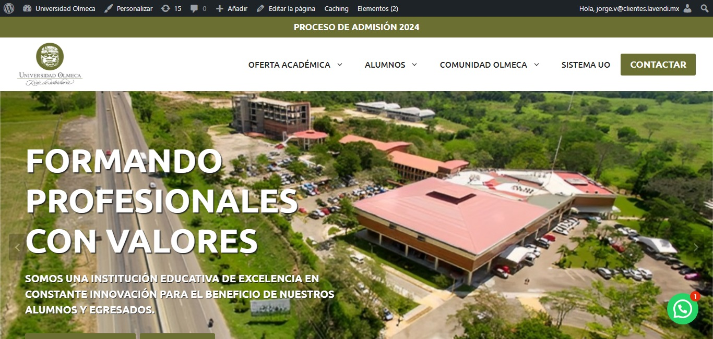

PORTAFOLIO


Hola, soy Jorge Valderrabano. Soy desarrollador web especializado en Diseño Web, Desarrollo Frontend y Wordpress. También soy creador de contenido multimedia
Trabajé como redactor de noticias, reportajes y crónicas. También desarrollé mis habilidades en edición de contenidos de páginas web
Comencé como analista de datos, lo que me permitió aprender elaboración de reportes y requisiciones. También actué como coordinador de proyectos y solicitudes de servicio. Además trabajé como administrativo y trabajo operativo, lo que me permitió llevar a cabo una atención y seguimiento de proyectos a nivel nacional
Actualmente trabajo como desarrollador frontend y de wordpress. Con la experiencia que he adquirido a lo largo de los años he logrado consumar un potencial profesional que me permitió entrar al mundo del diseño y desarrollo web.